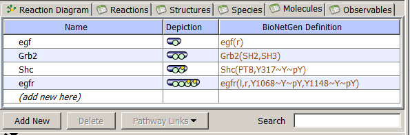

Molecules are the principal component of rule-based model specification. They are used to create Species, define Reaction Rules and Observables. Molecules are structured objects comprised of components (called sites) that can bind to each other, both within a molecule and between molecules. Sites typically represent physical parts of proteins, such as the SH2 and SH3 domains of the adapter protein Grb2. Sites may also be associated with a list of states, intended to represent states or properties of the site, e.g. phosphorylation status
The Molecules Tab displays a table of the Molecule name, Cartoon depiction of each molecule and the
BioNetGen molecular definition. In the Cartoon, green circle denotes
molecular site, while small yellow circle denotes that this Site has possible states.
Selecting molecule brings the Molecule Properties
in the bottom right pane, where a user can specify and edit a selected Molecule.

Edit A molecule can be specified in two ways:
Filter the list of species using the Search Box to enter a species name or a structure name.
Delete molecules by highlighting and using the "Delete" button below the table. Molecule will not be deleted if it is used elsewhere in the model.
Add annotation about the molecules within the Molecule Properties pane in the bottom window.